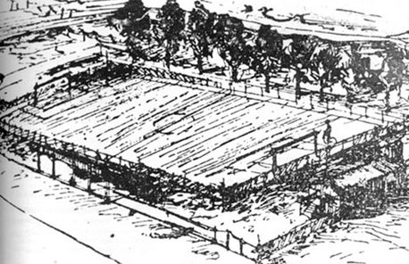

En esta página web, van a poder encontrar mucha información del Club Atlético River Plate, desde su creación, hasta sucesos un poco más actuales. Va encontrar también, información sobre los ídolos, copas ganadas o perdidas, hinchadas, y más cosas para poder informarse sobre el gran club argentino.
Voy a contarles la historia y actualidad en orden cronológico, es decir desde los principios del club hasta lo más actua
El 25 de mayo de 1901, se funda river plate tras la fusión de La Rosales y Santa Rosa, dos equipos del barrio de la boca

Claramente, junto a la fundación del club, se dio el comienzo a la primera comisión directiva quien estuvo dirigida por:
La primer cancha de river, fue fundada el 28 de mayo de 1901 del lado este del dársena sur, ccerca de las carboneras wilson.
 GALERIA CONTACTO